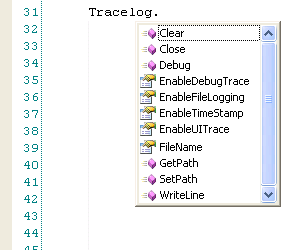

The Tracelog object is available to use in VBScript in the test program. It gives access to the methods and properties used to control the output to the Script Trace Log window and the trace files. From the test script, simply type "Tracelog" followed by a period (".") and the method or property to use. As shown below, IntelliSense® is available for the Tracelog object.

Click on the following links for a detailed description of each property or method.
| Clear | Close | Debug | EnableDebugTrace |
| EnableFileLogging | EnableTimeStamp | EnableUITrace | FileName |
| GetPath | SetPath | WriteLine |
void Clear()
Clears all text from the Script Trace Log window. This function has no effect any text written to the trace file.
Example VBScript call:
|
|
void Close()
Closes the trace log file. Once the trace log file is closed, the user may move or delete the trace file. However, any subsequent calls to write to the trace file will cause the file to be reopened.
Note: The trace file is normally closed at the end of the test program, so it should not be necessary to call this function.
Example VBScript call:
|
|
void Debug(string strMsg)
strMsg: The text to be output to the Script Trace Log window and/or the trace file.
The Debug method is used to output text to the Script Trace Log window and the trace files. It is generally used to send more verbose output that is helpful early on in the test program development stage. After the test program has been thoroughly debugged and is working correctly, the Debug outputs should no longer be used. You can toggle the Debug output with EnableDebugTrace.
Example VBScript call:
|
|
Enables/disables debug logging to the Script Trace Log window and trace file. If this property is set to true AND EnableUITrace is set to true, any Tracelog.Debug calls from the test script will be output to the Script Trace Log. If both this property and EnableFileLogging are true, the Tracelog.Debug calls will also be written to the trace file. The default is false.
Example VBScript call:
|
Tracelog.EnableDebugTrace = false ' Disables debug output |
Note: This property may also be set from the Properties Page. See Test Program Properties.
Enables/disables trace logging to a file. If this property is set to true, any Tracelog.Writeline and Tracelog.Debug (if EnableDebugTrace is true) calls from the test script will be written to the file specified by TraceFilePath. The default is false.
Example VBScript call:
|
Tracelog.EnableFileLogging = false ' Disables file output |
Note: This property may also be set from the Properties Page. See Test Program Properties.
If true, the current time is prepended to the output line. If false, the time is not included. This applies to both the Debug and WriteLine outputs. The default is false.
Example VBScript call:
|
Tracelog.EnableTimeStamp = false ' Disables time stamp |
Note: This property may also be set from the
Properties Page. See
Test Program Properties.
Enables/disables trace logging to the Script Trace Log window. If this property is set to false, any Tracelog.Writeline and Tracelog.Debug calls from the test script will not be output to the Script Trace Log. The default is true.
Example VBScript call:
|
Tracelog.EnableUITrace = false ' Disables UI tracing |
Note: This property may also be set from the Properties Page. See Test Program Properties.
Get or sets the name (only) of the Tracelog file. To access the directory of the Tracelog file, use GetPath() or SetPath().
Example VBScript call:
|
Tracelog.WriteLine Tracelog.FileName ' Gets the Tracelog file name and output it to the tracelog |
string GetPath()
Returns a string containing the current path of the trace files that are written when EnableFileLogging is true.
Example VBScript call:
|
|
void SetPath(string strPath)
strPath: A string containing the path to set.
The SetPath method sets the path of the file written to when EnableFileLogging is true. The default path is C:\Temp\ActivATE\TraceFiles. If a folder in the path does not exist, it will automatically be created when the file is written. The name of the file is predefined as "Trace_TIU<TIU #>.txt and cannot be changed. For example, a test program that is run on TIU 8 will write to a file named "Trace_TIU8.txt". If the file does not exist, it will be created. If the file does exist, the new data is appended to the end of the existing file.
Example VBScript call:
|
|
Note: This property may also be set from the Properties Page. See Test Program Properties.
void WriteLine(string strMsg)
strMsg: The text to be output to the Script Trace Log window and/or the trace file.
The WriteLine method is used to output text to the Script Trace Log window and the trace files. You can toggle the trace output with EnableUITrace.
Example VBScript call:
|
|
See Also
Script Trace Log Window | Script Errors
EADS North America Test and Services
Last updated on 10/29/10 by S. Lao